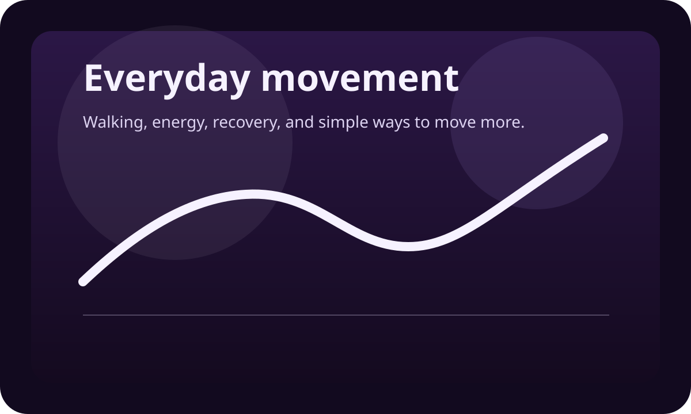
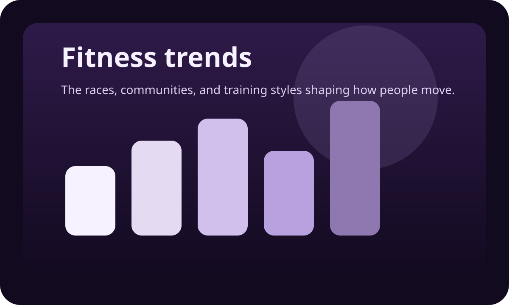
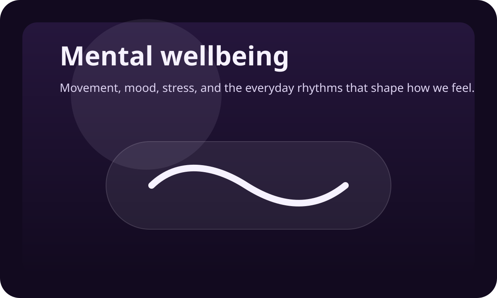
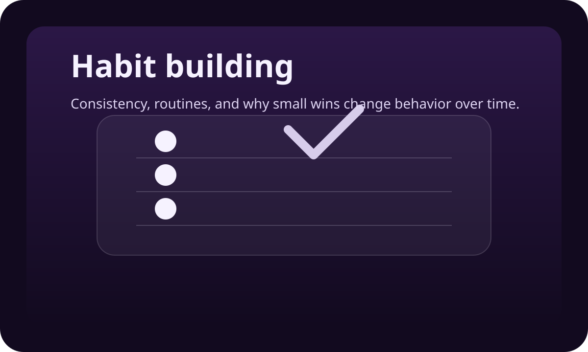
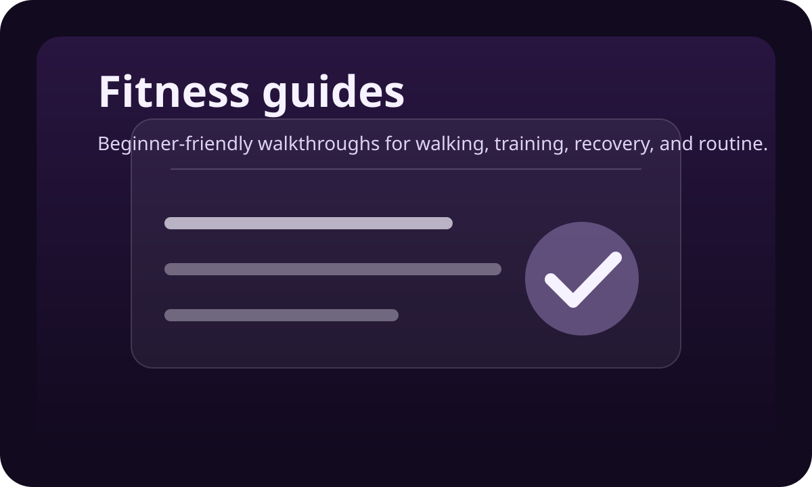
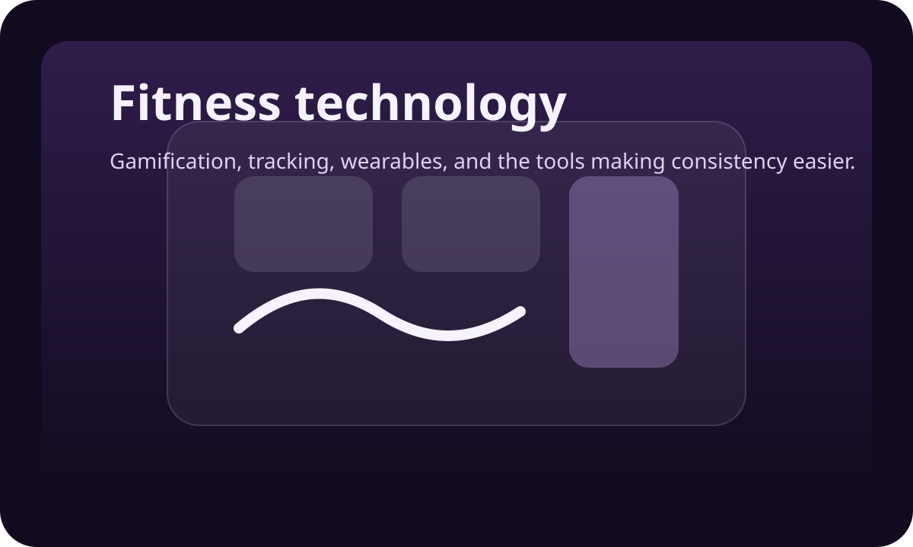

Emorya blog
Movement, fitness, wellbeing, and rewards articles for real life.
Explore practical articles on walking, recovery, habits, fitness trends, and health technology, with clearer pathways into rewards and Emorya where they genuinely help.
What you will find here
Useful health and movement content first, Emorya context where it fits.
Most of the blog focuses on everyday movement, wellbeing, habits, and fitness culture. When rewards, technology, or product design matter, we explain them in plain language and keep the connection practical.
Featured article
Start with a question people already care about.
Good health content earns attention by being useful first. This lead article answers a familiar walking question in a way that feels practical, balanced, and easy to apply.

Everyday movement
How many steps a day do you actually need?
A direct, evidence-aware answer to one of the most common walking questions on the internet, with practical ranges, limitations, and a softer way to think about daily movement targets.
Fitness trends
Why HYROX has become the fitness race everyone is talking about
Understand why fitness racing is spreading and why more everyday athletes want training with a clearer purpose.
Read articleFitness technology
How gamification helps people stay consistent
See why streaks, progress loops, and calmer reward signals can make healthy habits easier to repeat.
Read articleExplore topics
Seven topic areas to browse.
Browse the main themes across the blog, from everyday movement and wellbeing to fitness technology, rewards, and clearer product education.

Everyday movement
Walking, daily activity, mobility, and energy.
Practical health content for readers who want to move more without turning fitness into a second job.
Explore category
Fitness trends
Where fitness culture is moving next.
Trend explainers that help readers understand what is worth paying attention to and why it matters.
Explore category
Wellbeing
Movement, stress, sleep, and mental clarity.
Balanced articles on mood, energy, recovery, and the quieter side of staying consistent.
Explore category
Habits
Behavior change that feels realistic.
Simple explanations of motivation, discipline, streaks, progress tracking, and habit formation.
Explore category
Fitness guides
Evergreen education for beginners.
Guides for walking, training, recovery, and getting fitter without unnecessary complexity.
Explore category
Fitness tech
Gamification, wearables, apps, and AI.
Coverage of the tools and systems that make healthy behavior easier to track and sustain.
Explore category
Latest reads
Recent articles from across the blog.
Read across movement, habits, fitness trends, wellbeing, and digital rewards without needing to jump between separate parts of the site.
Everyday movement
How many steps a day do you actually need?
A practical answer for people trying to move more without getting trapped by a single magic number.
Read articleFitness trends
Why HYROX has become the fitness race everyone is talking about
What HYROX is, why it is spreading so quickly, and what it says about how people want to train.
Read articleWellbeing
The link between movement and mood
A grounded explanation of how everyday movement influences stress, confidence, and mental clarity.
Read articleHabits
How to build a walking habit that actually sticks
Small wins, environmental cues, and realistic targets that make consistency easier to keep.
Read articleFitness guides
Beginner walking plan: from 10 minutes to one hour a day
A clear progression for readers who want structure, not intensity, as they build a routine.
Read articleFitness tech
How gamification helps people stay consistent
Why streaks, progress signals, and small rewards can turn good intentions into repeated action.
Read article
Rewards and Web3
What is move-to-earn?
A plain-English introduction to movement rewards, where the model came from, and why it needs better design.
Read article
Rewards and Web3
How Emorya turns movement into digital value
A simple explanation of how activity, points, EMRS, EMR, and guided wallet access connect inside the Emorya ecosystem.
Read articleKeep exploring
From useful reading into the wider Emorya story.
Start with practical articles, move into fitness technology and rewards if relevant, and explore the product when you want a clearer view of how Emorya fits.
Start with movement
Start with everyday health and movement.
Read practical articles on walking, recovery, habit-building, and steady fitness progress without hype or unnecessary complexity.
Browse movement articlesLearn the system
See where technology and rewards fit.
Move into articles on gamification, progress tracking, wellness apps, and why feedback loops can help people stay engaged.
Explore fitness techExplore Emorya
Explore how Emorya brings it together.
When you are ready, connect the reading experience back to the app, the reward system, the community, and a calmer explanation of onboarding.
See how Emorya works